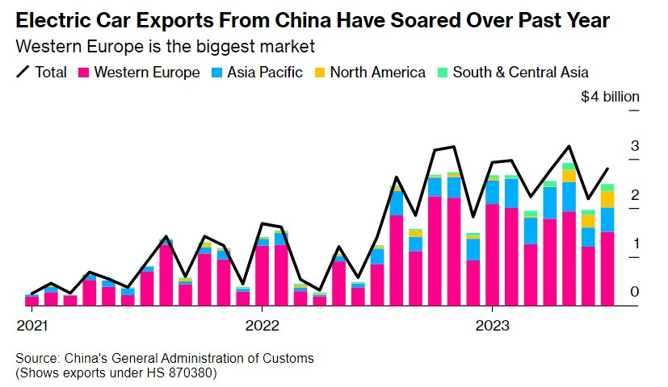
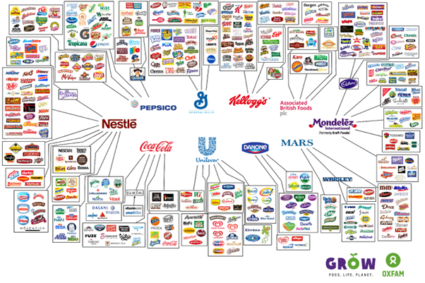
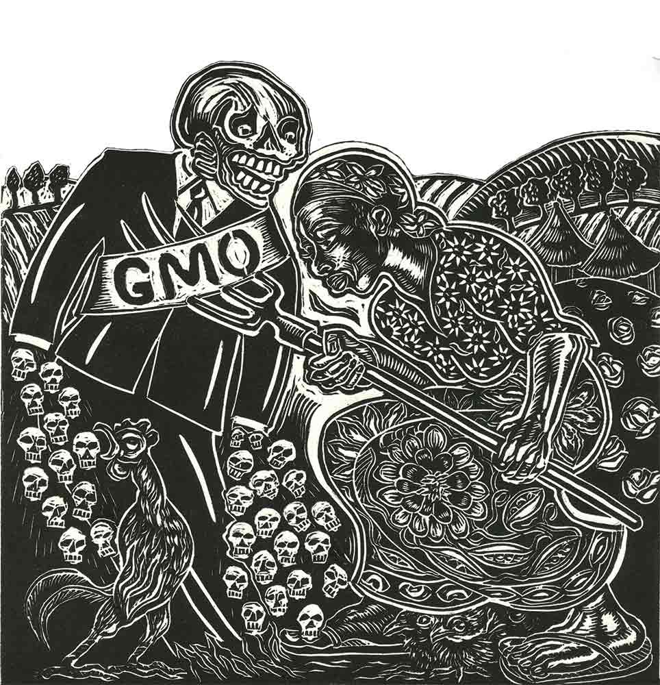
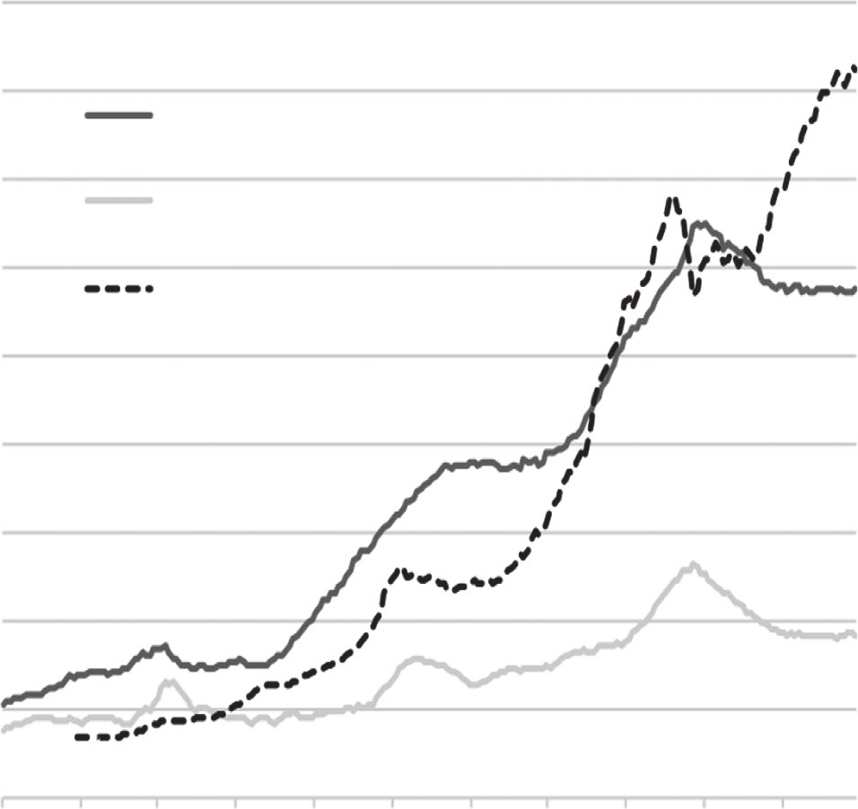

3 Auto Industry
Smith
China is flooding Europe with electric cars. Over the past two years, China has gone from an also-ran in the auto industry to the world’s biggest car exporter. EVs are a huge chunk of those exports, and most of China’s EV sales go to Europe.

Some forecasts say that by 2025, about 15% of EVs bought in Europe will be made in China — some by Western automakers like Tesla and Volkswagen, some by Chinese companies like BYD.
It’s very easy to understand why this is happening. China massively subsidizes the production of electric vehicles, and Europe massively subsidizes the consumption of electric vehicles. When that happens, any Econ 101 model can easily predict the outcome — China will produce a lot of EVs that are sold in Europe.
In fact, this basic dynamic was present even before the recent export surge. Usually, most cars are made close to where they’re sold. But even in 2021, Europe was buying more EVs than it was making.
China pays manufacturers a subsidy worth more than $1400 per EV they produce, provides EV companies with cheap land and financing, and heavily subsidizes R&D in the sector. Both China and Europe pay people to buy EVs, and their governments buy EVs directly. But China subsidizes local production a lot more than Europe.
That’s one reason for China’s export dominance, but not the only one. Another is that China controls nearly the entire supply chain for EV batteries, except for the initial mining.
Losing the car industry could thus push Europe further along the path to deindustrialization. Cheap Chinese EVs are a boon to European consumers, and they help speed the green transition and reduce carbon emissions. But the competition also threatens to put a bunch of European workers out of a job — 7% of the region’s workforce work in the automotive sector. Traditionally, Europe has been much more concerned than the U.S. about protecting its industries from foreign competition; the EV spat with China will be a test of whether this is still the case, or whether Europe has embraced more of a “neoliberal” approach to trade.
But there could also be a national security angle here too. The Ukraine war is stalemated, and promises to be a long slog, even as U.S. domestic politics puts American support for Ukraine in jeopardy. That means that the job of supporting Ukraine’s continued independence will fall to Europe; and if Ukraine does fall, Europe will still be on the hook, since Putin will then turn his eyes to Poland and the Baltics. So Europe will need to match Russian war production, in areas like shells, missiles, artillery, air defense, drones, and armored vehicles. A domestic auto industry gives Europe much more ability to repurpose production lines and ramp up defense production when needed. If the auto industry flees to China, Europe will be that much more vulnerable to Russia. In fact, this is one reason the auto industry is so globally distributed today; during and after World War 2, lots of countries decided they needed car industries in order to maintain strong militaries.
In order to address these issues, Europe would need more than tariffs. It would need an equivalent of the U.S.’ Inflation Reduction Act — a major program of production subsidies, not just for EVs themselves but for the batteries and the mineral processing facilities necessary to make them.
3.1 Food
3.1.1 Food Monopolies
Roberts
And then there are the food monopolies. Four companies – the Archer-Daniels-Midland Company, Bunge, Cargill and Louis Dreyfus, known collectively as ABCD – control an estimated 70-90% of the global grain trade. They have been taking advantage of the food supply crisis by hiking their profit margins. Further up the food chain, just four corporations — Bayer, Corteva, ChemChina and Limagrain — control more than 50% of the world’s seeds . From seeds and fertilizer to beer and soda, just a small number of firms maintain a powerful hold on the food industry, determining what is grown, how and where it’s cultivated and what it sells for. Only 10 companies control almost every large food and beverage brand in the world. These companies — Nestlé, PepsiCo, Coca-Cola, Unilever, Danone, General Mills, Kellogg’s, Mars, Associated British Foods, and Mondelez — each employ thousands and make billions of dollars in revenue every year.

3.1.2 ‘Climate-smart Agriculture’
Zaitchik
How Bill Gates and agribusiness giants are throttling small farmers in Africa and the Global South.

Fig: Illustration by Sue Coe
This past summer, the global trade regime finalized details for a revolution in African agriculture. Under a pending draft protocol on intellectual property rights, the trade bodies sponsoring the African Continental Free Trade Area seek to lock all 54 African nations into a proprietary and punitive model of food cultivation, one that aims to supplant farmer traditions and practices that have endured on the continent for millennia.
A primary target is the farmers’ recognized human right to save, share, and cultivate seeds and crops according to personal and community needs. By allowing corporate property rights to supersede local seed management, the protocol is the latest front in a global battle over the future of food. Based on draft laws written more than three decades ago in Geneva by Western seed companies, the new generation of agricultural reforms seeks to institute legal and financial penalties throughout the African Union for farmers who fail to adopt foreign-engineered seeds protected by patents, including genetically modified versions of native seeds. The resulting seed economy would transform African farming into a bonanza for global agribusiness, promote export-oriented monocultures, and undermine resilience during a time of deepening climate disruption.
The architects of this new seed economy include not only major seed and biotech firms but also their sponsor governments and a raft of nonprofit and philanthropic organizations. In recent years, this alliance has cannily worked to expand and harden intellectual property restrictions around seeds—also known as “plant variety protection” — under the fashionable policy mantra of “climate-smart agriculture.” This broad rhetorical phrase conjures a suite of practical, climate-driven upgrades to food production that conceals a vastly more complicated and contentious effort to reengineer global farming for the benefit of biotech and agribusiness—not African farmers or the climate.
The tightening of intellectual property laws on farms throughout the African Union would represent a major victory for the global economic forces that have spent the past three decades in a campaign to undermine farmer-managed seed economies and oversee their forced integration into the “value chains” of global agribusiness. These changes threaten the livelihoods of Africa’s small farmers and their collective biogenetic heritage, including a number of staple grains, legumes, and other crops their ancestors have been developing and safeguarding since the dawn of agriculture.
For the farmers who are in the path of a global market crusade to standardize and privatize their seeds, the stakes are simply the preservation of their right to economic self-determination.
Ghana: ..provisions in the country’s 2020 seed law (Ghana’s Plant Variety Protection Act): Politicians in Accra had criminalized the saving, sharing, and trading of seeds among neighbors or at local markets. Word was spreading that farmers who shared seeds protected by patents—a concept as foreign to most of them as the genetically modified seeds the patents protected—could be sent to prison. Farmers were particularly worried about the government’s expected decision to green-light a genetically modified variety of the cowpea, a staple of West African diets. Was it possible, the farmers asked, that Ghanaian police could be empowered to imprison cowpea farmers for trading and refining “unregulated” native seed stocks?
During Vice President Kamala Harris’s whirlwind trip through Ghana, Zambia, and Tanzania the White House released its strategy paper on sub-Saharan Africa the previous summer. In all three countries, Harris reaffirmed that document’s pledge to fight food insecurity and “boost” agricultural production on the continent. At a Zambian farm, she announced $7 billion in public-private investments aimed at bringing “new technologies [and] innovative approaches to…the agricultural industry.” These would be delivered, she said, by partnerships involving “African leaders, African corporations, US corporations, nonprofits, [and] philanthropists.” She invoked the beguiling, technocratic vision of “climate-smart agriculture” as a rationale for dramatically restructuring the region’s food economy.
Ghana’s Plant Variety Protection Act is a national variant of a regional and global crusade to integrate every aspect of smallholder farming into the industrial food system.
Since the 1980s, agribusiness, its sponsor governments, and its mega-philanthropy allies have targeted national laws and threats to push governments throughout the Global South to introduce patent-protected hybrids and genetically modified organisms, or GMOs. The most direct beneficiary of this plan is the four-company oligopoly that controls half the global seed market and 75 percent of the global agrichemicals market: Bayer (formerly Monsanto), Corteva (formerly DowDuPont), BASF, and Syngenta, a subsidiary of ChemChina.
Development-minded agronomists have touted chemical- and capital-intensive agriculture as the panacea for world hunger since the Green Revolution began in the 1960s. But the specific case they’ve made for replacing peasant-cultivated seed varieties with patented versions developed in foreign laboratories has morphed over the decades. Today’s rhetoric pivots on alleged concern over “food security” in an age of climate change.
The global debt crisis of the 1980s allowed Washington to condition aid and loans on state disinvestment in agriculture, clearing the way for Western agribusiness to enter markets in Africa and elsewhere.
Agribusiness firms with biotech divisions were especially keen on establishing a foothold in Africa, home to an agricultural sector that the business press touted as the “last great frontier” and valued in the trillions of dollars. To introduce African farmers to their seeds and agrochemicals, the companies teamed up with Western governments to establish public-private collaborations. The most significant of these was the West African Seed Alliance (WASA), a joint project of the US Agency for International Development and agribusiness giants such as Monsanto and DuPont Pioneer that worked with governments to “transform West African agriculture” by increasing access to “improved seed varieties, fertilizer and crop protection products.”
Food Sovereignity
Throughout the mid- and late ’90s, concerns about the potential health and environmental harms of GMOs fueled a fast-growing countermovement dedicated to slowing their spread. In the Global South, this movement deployed a new language of “farmers’ rights” to confront an increasingly strident Northern discourse of “plant breeders’ rights.” Groups resisting the top-down imposition of GMO seeds and input-intensive agriculture came together within La Via Campesina, an international network founded in 1993 to assert “the right of peoples to define their own food and agriculture systems.” With that group, the concept of “food sovereignty” was born.
The nascent movements for food and seed sovereignty scored a key victory in 2003, with the signing of the Cartagena Protocol on Biosafety. An addendum to the United Nations Convention on Biological Diversity, the agreement required signatory nations to adopt biosafety laws and regulatory agencies to oversee the testing, production, and sale of GMO crops. The protocol instantly curbed the rush toward a genetically modified Green Revolution in Africa.
The pro-GMO alliance realized that it needed a better promotional strategy for the post-Cartagena era. New industry-aligned donor groups soon emerged to clear legal hurdles and personally win over African officials, scientists, and regulators (if not yet actual farmers). The Rockefeller Foundation had brokered cruder versions of such alliances during the Green Revolution of the mid-20th century—a simpler time for the surgical deployment of US aid and know-how in the Global South—and now it updated the playbook. In 2001, Rockefeller officials met with executives from five major seed suppliers, including DuPont Pioneer, Monsanto, and DowAgro. This gathering hatched the African Agricultural Technology Foundation, which served a role that was similar to that of the West African Seed Alliance, but with a focus on African agronomists and researchers instead of politicians. “The AATF was designed to forge partnerships between biotech firms and African scientists, AATF attracted the attention and largesse of a new and ambitious player on the global philanthropy scene: the Bill & Melinda Gates Foundation. In 2007, the Gates and Rockefeller foundations partnered to launch the Alliance for a Green Revolution in Africa (AGRA) to turbocharge the legal and political transformation sought by the AATF and WASA.
Smallholding farmers who make up more than 60 percent of sub-Saharan Africa’s population. The Bill & Melinda Gates Foundation is by far the biggest funder of initiatives aimed at the transformation of African agriculture. With $63 billion in net assets, Gates arrives in most African countries with equal or greater standing than many heads of state. Gates group is the leading funder of AGRA, accounting for more than $650 million of the agency’s $1 billion budget since 2006. (Adjusted for the five-year strategy it announced in September, the number is likely closer to $950 million.) Gates’s money is also the main source of support for the Open Forum on Agricultural Biotechnology in Africa and the Alliance for Science, two extensive communications initiatives promoting GMOs on the continent. The Gates Foundation’s support for the African Agricultural Technology Foundation—totaling $141 million since 2008—has outpaced the $97 million spent by USAID, the group’s second-biggest funder. During this time, at least $46 million of the AATF’s budget has gone directly into the coffers of its top contractor, Bayer (formerly Monsanto). The so-called charity arm of the foundation funds industrial agriculture in Africa in ways that benefit the companies the foundation is invested in.
AGRA, Gates’s flagship Africa operation, has been a resounding failure by its own self-proclaimed altruistic metrics. Last February, an independent review commissioned by the Gates Foundation found that AGRA had made no significant progress toward its goals of doubling the yields and incomes of 30 million smallholder households and cutting food insecurity in half. After 12 years and more than $1 billion spent across 11 countries, hunger grew in Africa, while crop yields barely moved. Critics say this was a predictable outcome of AGRA’s policies.
If the target is food security, ‘improved’ seeds for a narrow set of commodity crops miss the mark entirely.
Hybrid and GMO seeds are engineered to grow with optimal water and large quantities of synthetic fertilizer, which small-scale farmers don’t have and can’t afford. Even when higher yields are achieved, monocropping depletes the soil and displaces more nutritious and important crops.
AGRA’s subtle rebrand occurred amid a broad shift in messaging in the donor-driven precincts of agricultural development policy: the emerging mandate to combat “food insecurity” by adopting “climate-smart agriculture” (CSA). The UN’s Food and Agriculture Organization coined CSA in 2009 to describe practices aimed at increasing farm resilience and reducing the carbon footprint of a global food system responsible for up to 37 percent of annual greenhouse gas emissions. Since then, however, observers say that CSA has been usurped by the Gates-led corporate alliance, with programs like Water Efficient Maize for Africa serving as green-painted Trojan horses for industry.
CSA is an agribusiness-led vision of surveillance [and] data-driven farmerless farming, [which explains why] its biggest promoters include Bayer, McDonnell, and Walmart.
Agro-ecology
Policies that promote true resilience must focus on regenerating soils through the use of organic fertilizers, crop rotation, and the preservation of native seeds able to adapt to changing conditions. These are the cornerstones of a global agro-ecology movement.
Pivotal to the success of sustainable food systems under local control, say agro-ecology advocates, is winning the battle for control of seeds.
The answer to climate change lies in traditional knowledge and ancestral seeds that have been around for thousands of years. We cannot allow the attack on them to succeed. It is an attack against life itself.
3.1.3 Small-scale farming
Rundgren
The potential of small farms for global food production is determined by economic conditions rather than biological, ecological or agronomic limitations.
The production of food per unit of land is rather higher on small farms than on big farms.
Yield per hectare also for a staple crop like corn is more or less the same in small farms as in bigger ones. But large farms are still gradually squeezing smaller farms out of the market, because of market access, possibilities for rational specialization, economies of scale, better access to credits or governmental policy distortions. Larger crop farms perform better financially, on average, than smaller farms. This is not because the larger farms have higher revenues or yields per area unit, but because they have lower costs.
In Sweden in 1949 dairy farms produced 5 million tons of milk while the total production today is 2.8 million tons. In 1949 there were 300,000 farms producing milk, with an average of 5 cows per farm; almost all milk was produced on small farms. Today the average dairy farm has around 100 cows, and there are just above 3,000 farms left. Most farms are still called family farms but can’t really be called small farms as we talk about investments of 2-10 million dollars or euro just to keep a few people occupied. The farms of 1949 used considerably less fossil fuels, artificial fertilizers, tractors and imported soy to produce almost twice as much milk. In some regards they were much more efficient than the prevailing production.
Rundgren (2023) small farms dont produce 70% of the worlds food, but they could produce all
3.1.4 TCA -True Cost Accounting
Our food system is a failure for farmers, consumers & nature. A new FAO report finds that the “hidden costs” from our food system, including non-communicable diseases, malnutrition, poverty & harm to the planet is 10% of global GDP or $12.7 trillion.
FAO
Agrifood systems generate significant benefits to society, including the food that nourishes us and jobs and livelihoods for over a billion people. However, their negative impacts due to unsustainable business-as-usual activities and practices are contributing to climate change, natural resource degradation and the unaffordability of healthy diets. Addressing these negative impacts is challenging, because people, businesses, governments and other stakeholders lack a complete picture of how their activities affect economic, social and environmental sustainability when they make decisions on a day-to-day basis.
The State of Food and Agriculture 2023 looks into the true cost of food for sustainable agrifood systems. The report introduces the concept of hidden environmental, health and social costs and benefits of agrifood systems and proposes an approach – true cost accounting (TCA) – to assess them. To operationalize the TCA approach, the report proposes a two-phase assessment process, first relying on national-level TCA assessments to raise awareness and then moving towards in-depth and targeted evaluations to prioritize solutions and guide transformative actions. It provides a first attempt at national-level assessments for 154 countries, suggesting that global hidden costs from agrifood systems amount to at least to 10 trillion 2020 PPP dollars. The estimates indicate that low-income countries bear the highest burden of the hidden costs of agrifood systems relative to national income. Despite the preliminary nature of these estimates, the analysis reveals the urgent need to factor hidden costs into decision-making for the transformation of agrifood systems. Innovations in research and data, alongside investments in data collection and capacity building, are needed to scale the application of TCA, especially in low- and middle-income countries, so that it can become a viable tool to inform decision- and policymaking in a transparent and consistent way.
3.2 Housing
3.2.1 Land Tenure Finance
Ryan-Collins Abstract
his article examines the links between private property in land and the financial system. Private landed property (PLP) has played an important role in supporting the growth of modern banking and credit systems, industrialization, and economic democratization. However, since the 1980s, high-income economies have exhibited a strong preference for PLP as a form of tenure, in the form of home ownership in particular. This pattern has combined with financial liberalization and innovation to create a land-finance feedback cycle with negative social and economic outcomes. They include a housing affordability crisis for younger and poorer socioeconomic groups; rising wealth inequality as land rents have become more concentrated; economic stagnation due to capital misallocation; and increased financial fragility as household debt has exploded. We illustrate these historical processes in the Anglo-Saxon “home-owning democracies,” where they have been strongest, focusing in particular on the United Kingdom, Australia, and the United States. This article considers how alternative tenure arrangements and reforms to finance and taxation could help mediate these dynamics.
Ryan-Collins Memo
Residential Capitalism
The dominant model of land tenure in high- income economies is private ownership, whether the use is commercial or residential. This fact is rarely questioned, but it could be considered one of the great paradoxes of modern capitalist economies. For, unlike most com- modities, land (considered as location) does not observe the basic rules of supply and demand upon which capitalist exchange and markets depend for their operation and efficiency. Land has special properties— inherent scarcity, fixity, and irreproducibility. As a result, increased demand yields higher economic rents, which tend to be capitalized into the market value of land. To say that land—which absorbs the growing wealth of the community and wider society in which it sits— should be privately owned and its value only lightly taxed (relative to income and profits) is perverse since the “owner” has done nothing to merit such gains. It was for this very reason that the founding fathers of modern economics—Adam Smith, David Ricardo, John Stuart Mill, and Karl Marx—viewed the landed class and land rents more gener- ally as a threat to capitalist development.
An important reason private landed property (PLP) has become so entrenched as a mode of tenure is its intimate relationship with finance. Titled, privately owned land is arguably the most attractive form of collateral in existence for financial institutions, given the above- mentioned special properties. By supporting the develop- ment of modern banking, PLP encouraged economic development and industrialization in both settler colonies and feudal regimes. The perverse economic effects of PLP are then, to some extent, counter- balanced by its enabling of finance and capitalist development.
But the interaction between land and finance is a delicate one. As a result of financial liberalization and globalization in advanced economies, financial speculation has become the dominant motive for investment in land and its appurtenances (most notably residential housing) and the source of negative consequences for society and the economy.
Policy attention has focused almost exclusively on so-called supply- side solutions to the housing problem, whether it be deregulating planning or zoning systems or just building more affordable homes, with much less attention paid to the demand side of the equation or the underlying institutions that have created the land-finance cycle.
In academia, the term “financialization” (of housing/real estate) has become popularized since the 2008 global financial crisis (GFC). However, a number of urban scholars, including Anne Haila, noted the problem of land being exploited as a financial asset rather than a factor of production or consumption good well before the GFC.
In one of her final works, critiques classical economists, who underestimated the ongoing power of landowners in capitalist accumulation. She also notes more recent trends of both corporations and the public sec- tor selling off land in order to release capital to their core business and public services, respectively. She calls for “a theory explaining landowners’ power and alliance with financiers, and the relationship between real estate and finance sectors”.
In this article, I focus on the relationship between PLP and the financial sector over time, with special attention to Anglo-Saxon lib- eral capitalist economies, in particular the United Kingdom, the United States, and Australia, where this mode of tenure, along with financial liberalization, has been promoted most vigorously.
In the hierarchy of risk of property titles, land carries the least risk, being superior to real capital goods, tradable assets, and contracted income. The more secure the debtor’s property title, the more easily he or she can secure credit and the lower the rate of interest. The rate of interest is then determined by the quality of collateral, and there is no “natural rate” that clears the goods market achieving equilibrium. This point has been noted by some economists critical of an equilibrium notion of perfect information.
Credit constraints, which are judged by the degree of liberalization of the mortgage credit markets, are the “elephant in the room,” helping to ex- plain significant differences in house prices and consumption between countries such as Germany, the United States, the United Kingdom, and Japan.
The deregulation of mortgage finance was initiated in the United States, the United Kingdom, and Australia following the collapse of the Bretton Woods agreement, which led to the freeing up of interna- tional credit flows and increasing competition between the New York and London financial sectors (Helleiner 1994; Krippner 2011). The election of conservative, free- market- oriented leaders (Reagan and Thatcher) in the United States and the United Kingdom led to the re- peal of regulations that prevented banks from competing with build- ing societies and other established housing finance institutions. Limits on interest rate charges and tax disadvantages were removed, along with other sectoral credit controls on mortgage credit—the so-called Big Bang. The removal of foreign exchange controls also made banks less dependent on domestic deposits for their funding, de-linking do- mestic incomes from mortgage credit growth.

From the mid-1970s, U.S. banks were able borrow from abroad to finance mortgages, in particular from the largely unregulated “Euro-dollar” market. Domestic financial innovations also enabled banks to attract deposit funding away from the thrifts.
By opening up housing finance to a vast global investment sector, it broke down previous na- tional and local institutional barriers to the funding of home purchase.
A key development motivating these dynamics in high- income economies in the 1980s was the emergence of a new international regulatory framework—the “Basel Accords”—that introduced for all banks minimum capital requirements that are related to the type of assets they held. Loans secured by mortgages on residential properties only carried half the risk weight (50 percent) of loans to non-financial firms in the original Basel Accord. Securitized mortgages, which were viewed as more liquid and thus even less risky, only carried a 20 per- cent risk weight. The effect of these reforms was to allow banks to earn fees and net interest margins by holding 2.5 times more credit risk in real estate than they had before, without any increase in their capital requirements.
These regulatory strategies can be seen as a classic example of the fallacy of composition. Regulators and banks, encouraged by policy- makers keen to boost homeownership levels, were right to consider that at the level of any individual bank, a residential mortgage loan will be less risky than an unsecured loan to a firm. But from the perspective of macroeconomic and macro-financial stability, the synchronized expansion of mortgage credit well beyond the rate of growth of GDP and of incomes was clearly problematic. Until the 2007–2008 crisis, however, central banks were reluctant to act, continuing to strictly observe their mandated focus on consumer price stability.
Credit and finance are not neutral. Where they go determines their effect on the economy. Traditional lending to firms supports capital investment and helps pay wages, leading to increased GDP transac- tions, economic growth, and productivity. The increased growth in the economy enables firms to pay back both the principal and the interest, preventing the build-up of excessive debt overhangs. But credit creation for the purchase of existing property and land increases property prices without stimulating investment or wages. Households must either take on more debt or reduce their spending, leading firms to cut back on investment, leading to lower profits and stagnating wages. This, in turn, feeds into more demand for mortgage debt as house prices continue to rise relative to incomes, generating a positive feedback cycle where increasing mortgage credit effectively creates its own supply. A study of 46 economies over 1990–2011 found a negative relationship between the stock of bank lending to domestic real estate and economic growth but positive growth effects of credit flows to non-financial business.
In Anglo-Saxon economies, homeownership levels appear to have peaked in the early 2000s and have been falling since then, despite further increases in mortgage debt relative to GDP. In these countries, housing wealth and land rents have become more concentrated in older and richer cohorts, with significant growth in “petty landlordism” and second-home ownership.
Privatized Keynesianism
This model of economic development has been termed “privat- ized Keynesianism” or “house-price Keynesianism”. Encouraging the personal accumulation of assets, such as housing equity, as a means of meeting the cost of social care and retirement needs in an aging population also made political sense to neoliberal governments keen on reducing the role of the state. “Asset-based wel- fare” began to emerge as a new policy framework, with homeowner- ship leading to less support for higher taxes to fund universal welfare provision and pensions.
The embrace of financial liberalization and homeownership by Anglo-Saxon capitalism may have also been driven, in part, by broader national economic strategies towards globalization. These countries saw their export industries, in particular manufacturing, facing fierce competition from China and other emerging markets and may have seen attracting foreign investment into real estate and other financial assets as a means to offset the resulting trade deficits. Other Western economies, such as Germany and Sweden, were able to preserve their manufacturing sectors and generate current account surpluses that made assetinflation a less attractive macroeconomic strategy.
Post-2008 Developments
Post-crisis, central banks have taken a closer interest in monitoring house prices and introduced macro- prudential policies aimed at restricting real estate credit to address “systemic risks” across national economies (Cerutti et al. 2017). Regulators have imposed limits to loan-to-value and loan-to-income ratios for mortgages and also targeted buy-to-let and interest-only mortgages with some success in the United Kingdom, Australia, Switzerland, New Zealand, and Hong Kong.
However, countervailing this has been extraordinarily loose mon- etary policy. Short-term policy interest rates have been reduced to the zero lower bound, whilst quantitative easing (QE) programs have driven down medium- and longer-term rates via the vacuuming up of government bonds from capital markets. The hope was that this would lead investors to invest more in risky, real-economy investments such as debt and equity issued by companies. But the evidence suggests that, rather than stimulating real-economy growth, QE has pumped up asset prices, in particular house prices.
The “wall of liquidity” created by QE catalyzed a global search for higher yielding, but safe, assets). Landed property, particularly in rich global cities, proved to be one of the most attractive assets for investors with global reach, not least because they could easily source borrowing, backed by property assets, at ultra-low interest rates from a banking sector still with a preference for real estate. Property prices in global cities have “synchronized,” with price dynamics closer to each other than with cities and regions in domestic hinterlands (Duca 2020). Although speculative buyers from both home and abroad usually target “prime” (very expensive) properties, speculation raises prices across these cities and means they become unaffordable for those on middle incomes.
A financial sector that has become so dependent on high and rising collateral values.
Only a developer protected from the profit motive, such as the state itself, can ever have any incentive to produce houses at a rate that would lower the cost of housing overall in the area they are being built.
East Asian states, in particular Singapore and Hong Kong, adopted a strategy of public land value (or rent) capture, becoming “property states.” In Singapore, 90 percent of the land is owned by the state, which leases it out for development, enabling it to capture land value i ncreases as leases come up for renewal; 82 percent of the resident population lives in high-quality public housing provided by the state. This creates a virtuous circle of socialized non-bank mortgage finance that has proven effective at providing affordable housing. The average house- price-to-income ratio in Singapore is one of the lowest in Asia and has been falling since a housing bubble in the mid-1990s. Meanwhile, the system provides the Singapore government with a handsome source of public revenues.
More aggressive macro-prudential policy would seem the most obvi- ous and easiest first step for central banks and financial regulators seeking to reduce the flow of mortgage credit into real estate.
The easiest way to introduce such a scheme might be to have some form of productive credit ratio, whereby a minimum ratio (such as 30 percent) of a bank’s assets should support non-financial firms. Currently, that ratio is around 10 percent on average in the United Kingdom.
Regulations should support banks that are able to de-risk their loans via methods other than property-based collateral. “Stakeholder banks” are more focused on business lending, do not have such stringent collateral requirements, and devolve decision-making to branches. They de-risk their loans not by requiring property as collateral but by building up strong and long-lasting relationships with and understanding of the businesses they lend to.
A tax on the incremental increase in the unimproved market value of land that would fall upon the landowner is the obvious policy choice, following Henry George’s ([1879] 1884) concept of a land value tax (LVT). By attaching a cost to owning land, LVT diminishes the incentive to buy land for speculative purposes—in hopes of real- izing capital gains—rather than for productive purposes or simply to provide shelter.
By the 1980s, the interaction between titled land and finance morphed into a damaging feedback cycle whereby the financial sectors became addicted to property as the main source of profits, collateral, and dominant assets on the bal- ance sheets of financial institutions. The more credit flows into land, the higher house prices and collateral prices go, and the more attrac- tive property becomes as an asset against which to lend. Ultimately, this leads to land and house prices rising well above incomes, driving up land rents and creating financial fragility and widening wealth inequality.
Ryan-Collins (2021) Private Landed Property and Finance: A Checkered History (pdf)
3.3 Ocean (‘Blue’) Economy
Crona Abstract
Ocean activities are rapidly expanding as Blue Economy discussions gain traction, creating new potential synergies and conflicts between sectors. To better manage ocean sectors and their development, we need to understand how they interact and the respective outcomes of these interactions. To provide a first comprehensive picture of the situation, we review 3187 articles to map and analyze interactions between economically important ocean sectors and find 93 unique direct and 61 indirect interactions, often mediated via the ocean ecosystem. Analysis of interaction outcomes reveals that some sectors coexist synergistically (e.g. renewable energy, tourism), but many interactions are antagonistic, and negative effects on other sectors are often incurred via degradation of marine ecosystems. The analysis also shows that ocean ecosystems are fundamental for supporting many ocean sectors, yet 13 out of 14 ocean sectors have interactions resulting in unidirectional negative ecosystem impact. Fishing, drilling, and shipping are hubs in the network of ocean sector interactions, and are involved in many of the antagonistic interactions. Antagonistic interactions signal trade-offs between sectors. Qualitative analysis of the literature shows that these tradeoffs relate to the cumulative nature of many ecosystem impacts incurred by some sectors, and the differential power of ocean sectors to exert their rights or demands in the development of the ocean domain. There are also often time lags in how impacts manifest. The ocean governance landscape is not currently well-equipped to deal with the full range of trade-offs, and opportunities, likely to arise in the pursuit of a Blue Economy in a rapidly changing ocean context. Based on our analysis, we therefore propose a set principles that can begin to guide strategic decision-making, by identifying both tradeoffs and opportunities for sustainable and equitable development of ocean sectors.
Crona (2021) Sharing the seas: a review and analysis of ocean sector interactions (pdf)
3.3.1 Financing the Ocean Economy
Sumaila Abstract
The ocean, which regulates climate and supports vital ecosystem services, is crucial to our Earth system and livelihoods. Yet, it is threatened by anthropogenic pressures and climate change. A healthy ocean that supports a sustainable ocean economy requires adequate financing vehicles that generate, invest, align, and account for financial capital to achieve sustained ocean health and governance. However, the current finance gap is large; we identify key barriers to financing a sustainable ocean economy and suggest how to mitigate them, to incentivize the kind of public and private investments needed for topnotch science and management in support of a sustainable ocean economy.
3.4 Blue Hegemony
Schutter Abstract
The blue economy has become an influential concept in international and national marine governance discourse. Various contested interpretations exist, and different actors choose to emphasise different aspects of the triple goal of environmental, economic, and social improvements. However, despite disagreement over its in terpretations, the blue economy finds support in many different arenas. This paper explores the position of dominance that the blue economy has reached, and examines how supporters of the concept maintain and employ power to keep it relevant. The paper applies a mixed-methods approach: 29 semi-structured interviews with people in roles of formal decision-making across the fisheries sector, economic development and tourism sector, conservation and environment sector, and specific blue economy-institutions are supplemented by ob servations from the wider landscape during 4 months of fieldwork in Seychelles. Findings show that in inter national discourse, the blue economy obtains and maintains its influence through persuasion and through the construction of a ‘common sense’ and productive way forward, capable of achieving triple wins. Within this narrative, oceans are undergoing a reconfiguration as economic frontiers, and the blue economy places economic growth from oceans centrally within contemporary environmental governance. Maintaining the blue economy as a powerful concept on the ground is done through social power relations: the blue economy functions as a boundary object, contributing to depoliticisation of discussions about a shared vision. Depoliticisation allows Seychelles to continue using the concept despite simmering dissent among policy makers, practitioners, and resource users. Dominance of the blue economy on the international stage means that associating with it brings Seychelles visibility and influence. The usefulness of the concept in eliding tensions makes it difficult for counter- hegemony to arise, although alternatives are emerging elsewhere, such as blue justice. However, fundamental change is needed to re-politicise environmental decision-making and explicitly discuss values and images attached to the blue economy.
Schutter Memo
The blue economy has widely gained influence at the international stage, and ties in with the hegemonic regimes of contemporary global environmental governance. It has become influential through persua sion and consent, and the boundary object status is useful to facilitate communication but also to offer something to everyone. The triple bottom line promise creates an appealing sense of progressive change, benefiting the economic, environmental, and social dimension simul taneously. Interest in the blue economy is further fuelled by framings of the ocean as underdeveloped and underexplored [31,62], and in need of rational management. The blue modernisation narrative thus absorbs issues associated with the ocean economy (e.g. coral bleaching, pollu tion, industrial overfishing). It avoids “challeng[ing] the factors causing our ecological ills” [77], constituting a passive revolution of continued and even accelerated exploitation through closing off pathways to alternative trajectories [66]. The emerging conceptualisations and proposed ways of governing oceans also determine who is considered to be connected to the ocean, and consequently, which stakeholders have a voice in blue economy debates. The lack of a culture of local civil society engagement and the ambiguity in the concept means that local engagement in Seychelles has proven difficult. Instead, voices from the international civil society have managed to gain positions of influence, strengthened by the increased reliance on NGOs in marine environmental governance following eco nomic restructuring and cuts in government budgets.
Schutter (2021) The blue economy as a boundary object for hegemony across scales (pdf)